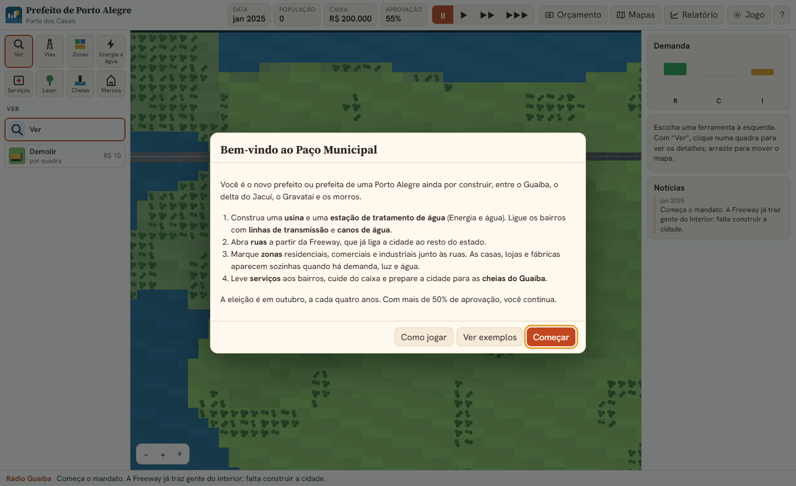
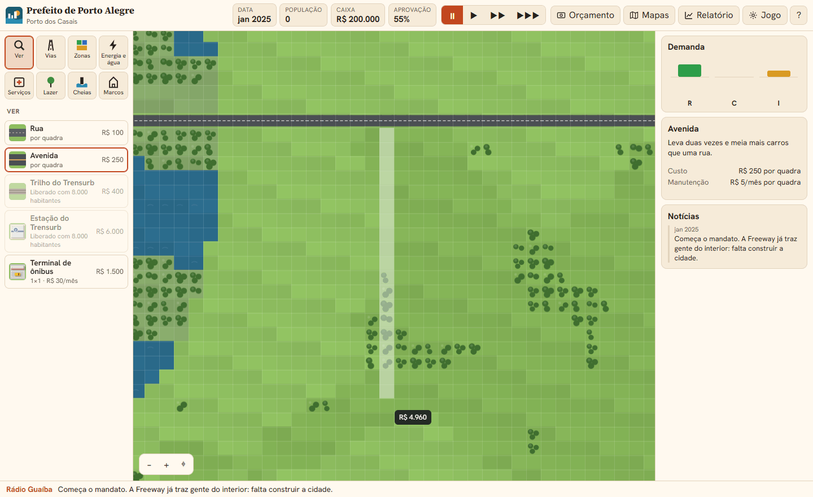
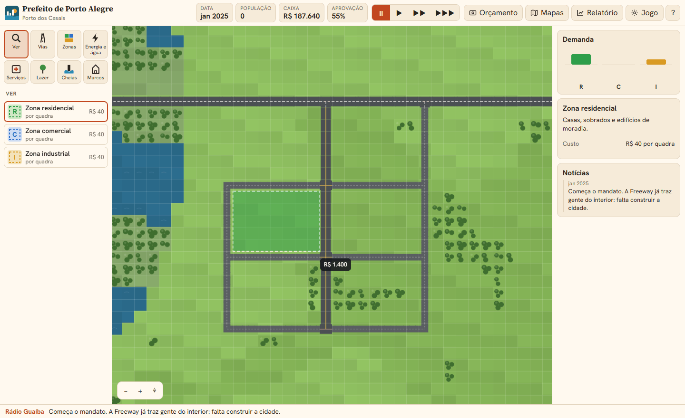
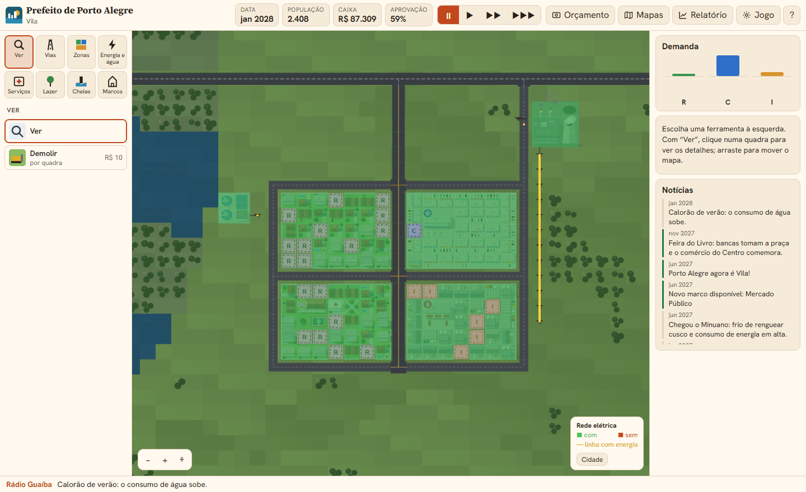
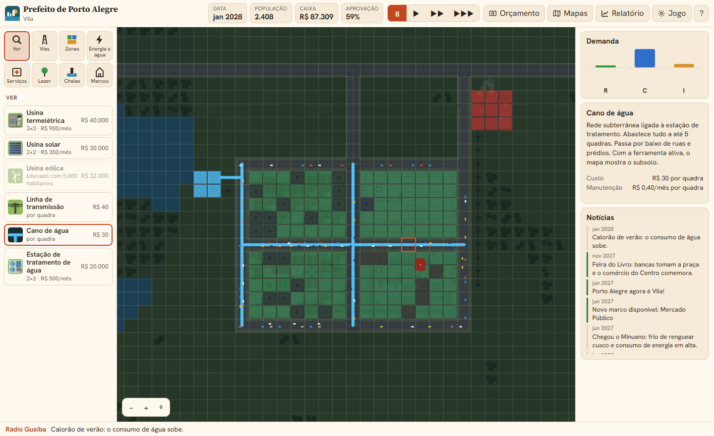
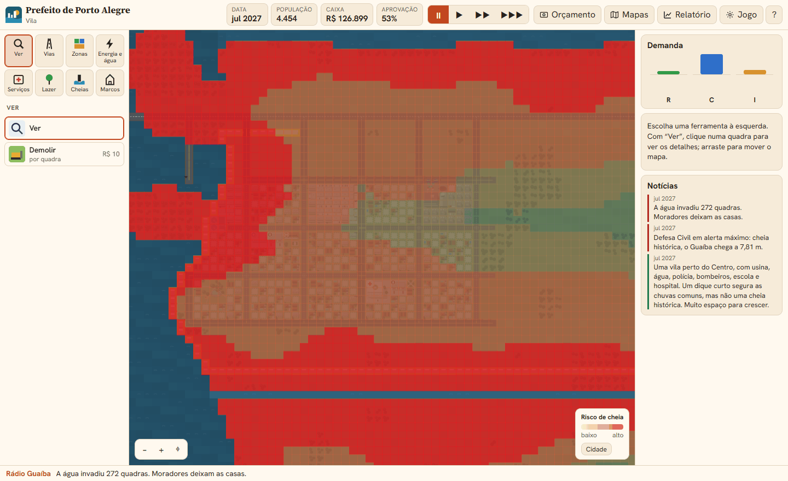
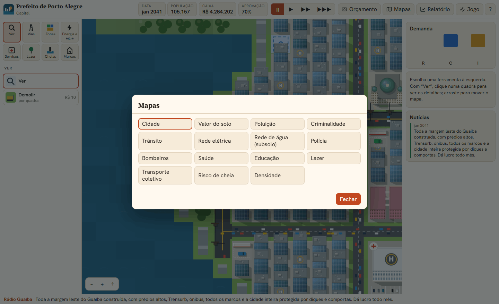
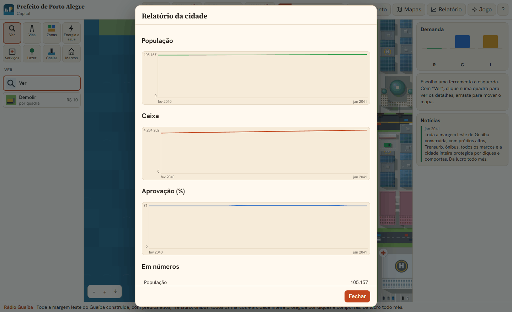
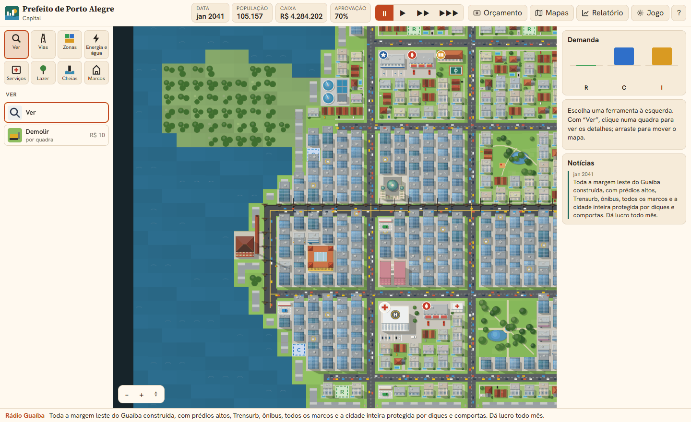
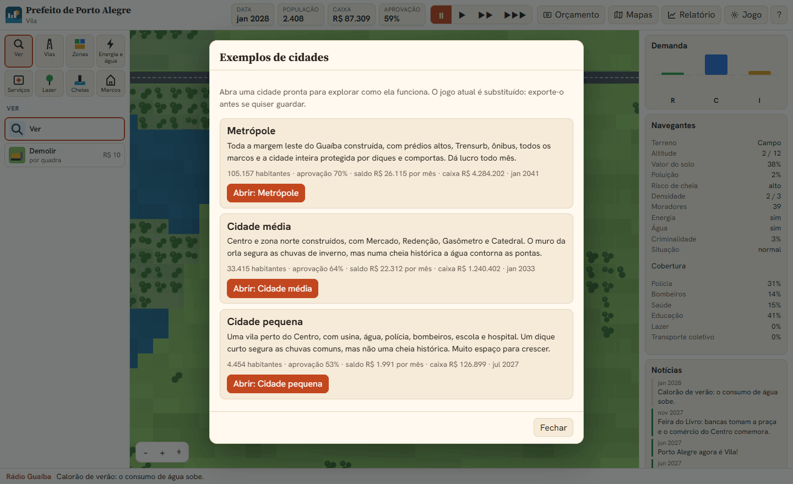

O jogo
Prefeito de Porto Alegre é um simulador de cidade que roda no navegador, num único arquivo HTML. Você assume a prefeitura de uma Porto Alegre ainda por construir, entre o Guaíba, o delta do Jacuí, o Gravataí e os morros. As casas, lojas e fábricas aparecem sozinhas; o seu trabalho é dar a elas o que precisam: ruas, energia, água, serviços e proteção contra as cheias. [1]
O jogo está em português, inglês, italiano e espanhol, salva sozinho no navegador e não precisa de instalação nem de conta.
Jogar Prefeito de Porto Alegre

Palavras que você vai ver o tempo todo
- Quadra
- Cada quadradinho do mapa. Custos e alcances são contados em quadras.
- Zona
- Terreno marcado para moradia (R), comércio (C) ou indústria (I). Os prédios nascem nas zonas.
- Demanda
- O quanto a cidade quer de cada tipo de zona. Aparece nas barras R, C e I.
- Cobertura
- A área que um serviço (polícia, bombeiros, saúde, escola, lazer) atende em volta dele.
- Valor do solo
- O quanto um lugar é desejado. Valor alto atrai prédios mais altos.
- Aprovação
- O que os moradores acham do seu governo. Decide a eleição.
A tela
A tela tem cinco partes. Vale a pena reconhecê-las antes de construir:
| Parte | O que mostra |
|---|---|
| Barra superior | data, população, caixa e aprovação; os botões de velocidade (pausa, 1, 2 e 3); e os botões Orçamento, Mapas, Relatório, Jogo e ? (ajuda) |
| Paleta, à esquerda | as categorias Ver, Vias, Zonas, Energia e água, Serviços, Lazer, Cheias e Marcos, e as ferramentas de cada uma, com preço e manutenção por mês |
| Mapa, no centro | a cidade; arraste para mover e use a roda do mouse ou os botões − e + para o zoom |
| Painel, à direita | a Demanda (barras R, C e I), a descrição da ferramenta escolhida ou os detalhes da quadra inspecionada, e as Notícias |
| Rádio Guaíba, embaixo | a última notícia, sempre visível |
No celular, a paleta e o painel viram gavetas, abertas pelos botões nos cantos da barra superior.
↑ Voltar ao topoPasso 1: ruas a partir da Freeway
A cidade começa vazia, cortada pela Freeway, que já a liga ao resto do estado. Tudo o que você construir precisa chegar a ela. Abra Vias e escolha Avenida ou Rua. Ruas, avenidas, trilhos e diques se constroem arrastando do início ao fim.

A avenida custa R$ 250 por quadra e leva duas vezes e meia mais carros que a rua, de R$ 100. Use avenidas nos eixos principais e ruas dentro dos bairros. Rua sobre a água vira ponte e custa seis vezes mais.
No passo a passo deste tutorial, uma avenida desce da Freeway e três ruas fecham dois quarteirões de cada lado dela.
↑ Voltar ao topoPasso 2: zonas
Em Zonas, arraste retângulos para marcar onde a cidade pode crescer: residencial (verde), comercial (azul) ou industrial (amarela). Cada quadra zoneada custa R$ 40. Você não constrói as casas: elas aparecem quando há demanda, rua, energia e água.

Olhe as barras R, C e I antes de zonear: zoneie o que estiver em alta. No começo, a cidade quer moradias e um pouco de indústria, que dá empregos. O comércio vem depois, quando há gente para comprar.
↑ Voltar ao topoPasso 3: energia
Em Energia e água, construa uma usina. A termelétrica (R$ 40.000, 3×3 quadras) dá muita energia, mas polui; a solar e a eólica são limpas e rendem menos. A eólica só é liberada com 5.000 habitantes.
A energia sai da usina pela linha de transmissão (R$ 40 por quadra). Construções encostadas passam a energia umas para as outras, e ela pula uma rua de um quarteirão para o vizinho. Mas a energia não corre ao longo das ruas: para ir longe, puxe uma linha.

Prédio sem energia mostra um raio amarelo no mapa e não cresce.
↑ Voltar ao topoPasso 4: água
A estação de tratamento de água (R$ 20.000) capta água do Guaíba ou dos rios, então precisa ficar na margem. E ela precisa de energia: puxe uma linha de transmissão até ela.
A água sai da estação pelos canos (R$ 30 por quadra), que ficam no subsolo e passam por baixo de ruas e prédios. Tudo a até 5 quadras de um cano abastecido recebe água. Ao escolher a ferramenta de cano, o mapa mostra o subsolo.

Sem água, a cidade fica nas casas térreas: sobrados e prédios só aparecem com água. Prédio sem água mostra uma gota no mapa. Nessa vista do subsolo, a ferramenta Demolir remove só os canos.
↑ Voltar ao topoPasso 5: a cidade cresce
Com ruas, zonas, energia e água, aperte 1, 2 ou 3 na barra superior para o tempo andar. Cada mês, os prédios nascem, crescem ou são abandonados conforme a demanda, o valor do solo e os problemas do bairro.
Prédios altos precisam de valor do solo alto: orla, parques, serviços, pouco crime e pouca poluição. Nos morros, só nascem casas e sobrados. Ligar as ruas à Freeway ou à ponte do Guaíba ajuda o comércio e a indústria.
↑ Voltar ao topoInspecionar uma quadra
Com a ferramenta Ver, clique numa quadra para ver tudo o que o jogo sabe sobre ela. O nome do bairro aparece junto ao cursor.
Use a inspeção para responder perguntas como “por que esse bairro não cresce?”. A resposta costuma estar numa linha vazia: sem água, sem lazer, poluição alta ou cobertura baixa.
↑ Voltar ao topoServiços e cobertura
Polícia, bombeiros, saúde, escolas e lazer atendem um raio em volta. Quanto mais perto, melhor o atendimento. Polícia, bombeiros, saúde e escola precisam de energia.
| Serviço | Custo | Manutenção | Raio | Para que serve |
|---|---|---|---|---|
| Batalhão de polícia | R$ 9.000 | R$ 180/mês | 13 | reduz a criminalidade |
| Quartel de bombeiros | R$ 9.000 | R$ 180/mês | 13 | evita e apaga incêndios |
| Posto de saúde | R$ 4.000 | R$ 90/mês | 8 | saúde básica do bairro |
| Hospital | R$ 30.000 | R$ 600/mês | 20 | saúde para uma região grande; liberado com 3.000 habitantes |
| Escola | R$ 10.000 | R$ 220/mês | 12 | valoriza o bairro e atrai prédios melhores |
| Praça, parque, orla | R$ 800 a R$ 6.000 | R$ 10 a R$ 80/mês | 5 a 10 | lazer; a orla valoriza muito o entorno |
Os incêndios começam ao acaso e se espalham para as quadras vizinhas. Onde há bombeiros por perto, eles são raros e se apagam logo.
↑ Voltar ao topoTrânsito e transporte coletivo
Os carros saem das casas para o trabalho e as compras. Ruas cheias poluem e irritam os moradores, o que pesa na aprovação. Há três remédios: avenidas nos eixos mais usados, terminais de ônibus da Carris (R$ 1.500) e o Trensurb, liberado com 8.000 habitantes.
A estação do Trensurb precisa de outra estação na mesma linha de trilhos para funcionar. Os trilhos podem cruzar ruas.
↑ Voltar ao topoAs cheias do Guaíba
O Guaíba sobe no inverno e na primavera e, com chuvas fortes, invade as partes baixas. De vez em quando, a Defesa Civil anuncia uma cheia histórica, muito acima das chuvas comuns. As quadras alagadas perdem moradores e renda, e parte delas vira entulho quando a água baixa.
Antes de construir perto da água, abra o mapa Risco de cheia: ele mostra o que está abaixo da cota de inundação.

Como se proteger
- Dique (R$ 600 por quadra, em Cheias): um muro que a água não atravessa. Arraste-o ao longo da margem e feche as pontas até o terreno alto, ou a água dá a volta.
- Comporta: o dique construído sobre uma rua vira comporta. Os carros passam e a água não. Custa uma vez e meia o dique.
- Casa de bombas (R$ 7.000): drena as quadras alagadas num raio de 7. Precisa de energia e para se ela mesma ficar alagada.
A Porto Alegre de verdade
As cheias do jogo têm inspiração real. Em abril e maio de 1941, o Guaíba ficou 22 dias acima do normal e chegou a 4,76 m. [2] Depois disso, a cidade construiu um sistema de proteção com o Muro da Mauá, de 2.647 m de comprimento e 3 m de altura, concluído em 1974, e cerca de 68 km de diques, 14 comportas e 19 casas de bombas. [4]
Em 5 de maio de 2024, o Guaíba chegou a 5,37 m, acima da marca de 1941. [3] Comportas que não puderam ser bem fechadas e casas de bombas paradas deixaram a água entrar na cidade. [4] Não por acaso, no jogo a casa de bombas para sem energia: um dique só protege se as comportas fecham e as bombas funcionam.
↑ Voltar ao topoOrçamento e eleição
Você começa com R$ 200.000. A cidade arrecada IPTU das moradias, ISS do comércio e um imposto da indústria, e gasta com a manutenção das obras, as secretarias e o custeio da prefeitura, que cresce com a cidade. Tudo isso fica em Orçamento.
- Impostos: cada ponto a mais rende mais, mas espanta moradores e empresas e baixa a aprovação.
- Verbas: cortar a verba de uma secretaria economiza, mas reduz a cobertura dos serviços dela.
- Empréstimo: R$ 100.000 na hora, pagos em 60 parcelas de R$ 1.917 (15% de juros no total). Dá para ter até três ao mesmo tempo.
A aprovação sobe com serviços, empregos, lazer e impostos baixos, e cai com crime, trânsito, poluição, falta de energia ou água, cheias e incêndios. As notícias avisam quando a eleição se aproxima.
↑ Voltar ao topoMapas e relatório
O botão Mapas pinta a cidade com uma informação de cada vez. Use-os para decidir onde construir o próximo serviço.

O Relatório mostra a população, o caixa e a aprovação ao longo do tempo e os números da cidade. É ali que se vê se uma decisão funcionou.

Marcos e títulos
Conforme a população cresce, a cidade ganha títulos e libera os marcos de Porto Alegre em Marcos. Cada marco valoriza o entorno e atrai algo diferente.
| Habitantes | Título | O que é liberado |
|---|---|---|
| 0 | Porto dos Casais | ruas, zonas, energia, água, serviços básicos |
| 500 | Freguesia | — |
| 2.000 | Vila | Mercado Público |
| 3.000 a 8.000 | — | hospital, Parque da Redenção, eólica, Usina do Gasômetro, Casa de Cultura Mario Quintana, Catedral Metropolitana, Trensurb |
| 10.000 | Cidade | Hospital de Clínicas (12.000), Beira-Rio e Arena (15.000) |
| 20.000 a 40.000 | — | Fundação Iberê Camargo, Universidade, Aeroporto Salgado Filho |
| 50.000 | Capital | — |
| 150.000 | Metrópole | — |

Cidades de exemplo
Em Jogo › Exemplos de cidades… (ou no botão Ver exemplos das boas-vindas) há três cidades prontas, montadas com as mesmas regras do jogo. São um bom jeito de ver o que funciona antes de construir a sua.

- Metrópole: toda a margem leste construída, com prédios altos, Trensurb, ônibus, todos os marcos e a cidade inteira protegida por diques e comportas.
- Cidade média: Centro e zona norte, com o muro da orla que segura as chuvas de inverno mas não uma cheia histórica.
- Cidade pequena: uma vila com o básico funcionando e muito espaço para crescer.
Salvar e teclas
O jogo é salvo neste navegador a cada mês de jogo. Em Jogo, você também pode salvar na hora, exportar o jogo para um arquivo, importar um arquivo, começar um novo jogo com uma semente de mapa, ligar ou desligar os desastres e as eleições e trocar o idioma e o tema.
| Tecla | Ação |
|---|---|
| Espaço | pausar e continuar |
| 1 2 3 | velocidade |
| + − | zoom |
| Esc | voltar à ferramenta Ver |
| B / R | Demolir / Rua |
| setas e Enter | com o mapa em foco, mover o cursor e usar a ferramenta |
Erros comuns
Zona longe da rua
A zona precisa de rua a até três quadras. Sem acesso, nada nasce ali.
Usina sem linha
A energia não corre ao longo das ruas. Se o bairro está longe da usina, puxe uma linha de transmissão.
Estação de água sem energia
A estação de tratamento precisa de energia. Sem ela, os canos ficam secos e a cidade toda fica sem água.
Esquecer os canos
Sem água, a cidade não passa das casas térreas. Sobrados e prédios precisam de água.
Zonear sem demanda
Zonas sem procura ficam vazias e custam dinheiro. Siga as barras R, C e I.
Construir na várzea
Antes de construir perto da água, veja o mapa Risco de cheia. Dique sem as pontas fechadas não protege.
Gastar tudo na largada
Cada obra tem manutenção mensal. Guarde caixa para os meses em que a arrecadação ainda é pequena.
Esquecer a eleição
Em outubro, a cada quatro anos, você precisa de mais de 50%. Acompanhe a aprovação no Relatório.
Revisão rápida
Tente responder antes de abrir cada pergunta.
1. O que uma zona precisa para ganhar prédios?
Demanda, rua a até três quadras e energia. Para passar das casas térreas, também água.
2. A energia corre ao longo das ruas?
Não. Ela passa de uma construção encostada para a outra e pula uma rua entre quarteirões. Para ir longe, é preciso linha de transmissão.
3. Até onde um cano leva água?
A tudo o que estiver a até 5 quadras de um cano abastecido.
4. Por que a estação de tratamento fica na margem?
Porque ela capta água do Guaíba ou dos rios. E ela também precisa de energia.
5. O que acontece quando um dique passa por uma rua?
Vira comporta: os carros passam e a água não.
6. Por que um dique pode não proteger numa cheia histórica?
Se as pontas não chegam ao terreno alto, a água contorna o muro.
7. Quando é a eleição e quanto você precisa?
Em outubro, a cada quatro anos. É preciso mais de 50% de aprovação.
8. Como descobrir por que um bairro não cresce?
Inspecione uma quadra com Ver e procure o que falta: água, energia, lazer, cobertura de serviços, ou o que sobra: poluição, crime, trânsito.
Referências
- Giovani Perotto Mesquita, “Prefeito de Porto Alegre”, jogo em um único arquivo HTML, giovanipm.github.io/PrefeitoDePortoAlegre.html.
- Wikipédia, “Enchentes em Porto Alegre em 1941”, acesso em 06/11/2026, pt.wikipedia.org/wiki/Enchentes_em_Porto_Alegre_em_1941.
- Wikipédia, “Enchentes no Rio Grande do Sul em 2024”, acesso em 06/11/2026, pt.wikipedia.org/wiki/Enchentes_no_Rio_Grande_do_Sul_em_2024. Divergência: a tabela do artigo sobre 1941 [2] registra 5,35 m para 2024.
- Wikipédia, “Muro da Mauá”, acesso em 06/11/2026, pt.wikipedia.org/wiki/Muro_da_Mauá. Divergência: o artigo fala em 19 casas de bombas no sistema e, na seção de críticas, em 4 de 23 operando em 2024.